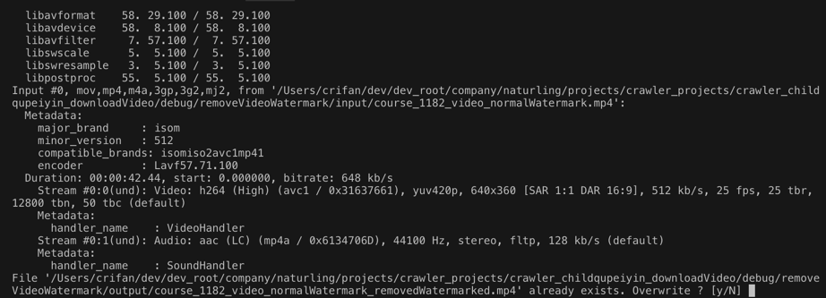

ffmpeg使用心得
此处整理ffmpeg的一些使用心得。
报错：[AVFilterGraph @ 0x7fa224608740] No such filter: 'ass'
ffmpeg -i CTT_Folge_01_CH_Subs_DefaultZhcnButNotShow.mp4 -vf "ass=subtitle.ass" addedAssSubtitle.mp4
报错：
[AVFilterGraph @ 0x7fa224608740] No such filter: 'ass'
原因：此处ffmpeg（没有subtitles，也）没有ass的filter
办法：
重新安装支持了ass的ffmpeg
具体步骤：
Mac
brew reinstall ffmpeg --with-libass
报错：Error: Calling keg_only :provided_pre_mountain_lion is disabled! There is no replacement
重新安装ffmpeg期间：
ffmpeg_edit_subtitle brew reinstall ffmpeg \
--with-tools \
--with-fdk-aac \
--with-freetype \
--with-fontconfig \
--with-libass \
--with-libvorbis \
--with-libvpx \
--with-opus \
--with-x265
报错：
Error: Calling keg_only :provided_pre_mountain_lion is disabled! There is no replacement.
解决办法：
先去更新brew再升级ffmpeg
brew update && brew upgrade ffmpeg
再去：
brew reinstall ffmpeg 加上你的要的参数
即：
brew reinstall ffmpeg \
--with-tools \
--with-fdk-aac \
--with-freetype \
--with-fontconfig \
--with-libass \
--with-libvorbis \
--with-libvpx \
--with-opus \
--with-x265
ffmpeg不显示头部信息
用ffmpeg去处理视频等过程中，每次运行命令，都会输出ffmpeg版本等信息
举例：
# ffmpeg -nostdin -i /root/xxx/course/32145/course_32145_video.mp4 -vf "delogo=x=474:y=6:w=162:h=90" -c:a copy /root/xxx/course/32145/course_32145_video_removedWatermark.mp4
ffmpeg version 4.2-static https://johnvansickle.com/ffmpeg/ Copyright (c) 2000-2019 the FFmpeg developers
built with gcc 6.3.0 (Debian 6.3.0-18+deb9u1) 20170516
configuration: --enable-gpl --enable-version3 --enable-static --disable-debug --disable-ffplay --disable-indev=sndio --disable-outdev=sndio --cc=gcc-6 --enable-fontconfig --enable-frei0r --enable-gnutls --enable-gmp --enable-libgme --enable-gray --enable-libfribidi --enable-libass --enable-libfreetype --enable-libmp3lame --enable-libopencore-amrnb --enable-libopencore-amrwb --enable-libopenjpeg --enable-librubberband --enable-libsoxr --enable-libspeex --enable-libsrt --enable-libvorbis --enable-libopus --enable-libtheora --enable-libvidstab --enable-libvo-amrwbenc --enable-libvpx --enable-libwebp --enable-libx264 --enable-libx265 --enable-libxml2 --enable-libxvid --enable-libzimg
libavutil 56. 31.100 / 56. 31.100
libavcodec 58. 54.100 / 58. 54.100
libavformat 58. 29.100 / 58. 29.100
libavdevice 58. 8.100 / 58. 8.100
libavfilter 7. 57.100 / 7. 57.100
libswscale 5. 5.100 / 5. 5.100
libswresample 3. 5.100 / 3. 5.100
libpostproc 55. 5.100 / 55. 5.100
Input #0, mov,mp4,m4a,3gp,3g2,mj2, from '/root/xxx/course/32145/course_32145_video.mp4':
Metadata:
major_brand : isom
minor_version : 512
compatible_brands: isomiso2avc1mp41
creation_time : 2015-11-16T08:09:13.000000Z
encoder : Lavf57.71.100
Duration: 00:00:46.00, start: 0.000000, bitrate: 678 kb/s
Stream #0:0(und): Video: h264 (High) (avc1 / 0x31637661), yuv420p, 640x360 [SAR 1:1 DAR 16:9], 544 kb/s, 25 fps, 25 tbr, 12800 tbn, 50 tbc (default)
Metadata:
creation_time : 2015-11-16T08:09:13.000000Z
handler_name : VideoHandler
Stream #0:1(und): Audio: aac (LC) (mp4a / 0x6134706D), 44100 Hz, stereo, fltp, 128 kb/s (default)
Metadata:
creation_time : 2015-11-16T08:09:13.000000Z
handler_name : SoundHandler
Stream mapping:
Stream #0:0 -> #0:0 (h264 (native) -> h264 (libx264))
Stream #0:1 -> #0:1 (copy)
[libx264 @ 0xce0e540] using SAR=1/1
[libx264 @ 0xce0e540] using cpu capabilities: MMX2 SSE2Fast SSSE3 SSE4.2 AVX FMA3 BMI2 AVX2 AVX512
[libx264 @ 0xce0e540] profile Progressive High, level 3.0, 4:2:0, 8-bit
[libx264 @ 0xce0e540] 264 - core 157 r2969 d4099dd - H.264/MPEG-4 AVC codec - Copyleft 2003-2019 - http://www.videolan.org/x264.html - options: cabac=1 ref=3 deblock=1:0:0 analyse=0x3:0x113 me=hex subme=7 psy=1 psy_rd=1.00:0.00 mixed_ref=1 me_range=16 chroma_me=1 trellis=1 8x8dct=1 cqm=0 deadzone=21,11 fast_pskip=1 chroma_qp_offset=-2 threads=6 lookahead_threads=1 sliced_threads=0 nr=0 decimate=1 interlaced=0 bluray_compat=0 constrained_intra=0 bframes=3 b_pyramid=2 b_adapt=1 b_bias=0 direct=1 weightb=1 open_gop=0 weightp=2 keyint=250 keyint_min=25 scenecut=40 intra_refresh=0 rc_lookahead=40 rc=crf mbtree=1 crf=23.0 qcomp=0.60 qpmin=0 qpmax=69 qpstep=4 ip_ratio=1.40 aq=1:1.00
Output #0, mp4, to
......
中的：
ffmpeg version 4.2-static https://johnvansickle.com/ffmpeg/ Copyright (c) 2000-2019 the FFmpeg developers
built with gcc 6.3.0 (Debian 6.3.0-18+deb9u1) 20170516
configuration: --enable-gpl --enable-version3 --enable-static --disable-debug --disable-ffplay --disable-indev=sndio --disable-outdev=sndio --cc=gcc-6 --enable-fontconfig --enable-frei0r --enable-gnutls --enable-gmp --enable-libgme --enable-gray --enable-libfribidi --enable-libass --enable-libfreetype --enable-libmp3lame --enable-libopencore-amrnb --enable-libopencore-amrwb --enable-libopenjpeg --enable-librubberband --enable-libsoxr --enable-libspeex --enable-libsrt --enable-libvorbis --enable-libopus --enable-libtheora --enable-libvidstab --enable-libvo-amrwbenc --enable-libvpx --enable-libwebp --enable-libx264 --enable-libx265 --enable-libxml2 --enable-libxvid --enable-libzimg
libavutil 56. 31.100 / 56. 31.100
libavcodec 58. 54.100 / 58. 54.100
libavformat 58. 29.100 / 58. 29.100
libavdevice 58. 8.100 / 58. 8.100
libavfilter 7. 57.100 / 7. 57.100
libswscale 5. 5.100 / 5. 5.100
libswresample 3. 5.100 / 3. 5.100
libpostproc 55. 5.100 / 55. 5.100
这部分内容。
如果觉得很麻烦，想要禁止其输出，可以加上参数：
-hide_banner
用于禁止显示banner，即可。
ffmpeg不显示输出的众多的普通的信息
另外，如果对于处理期间输出的众多内容，不想要显示，则可以加：
-loglevel error
用于设置当输出的信息，超过error，才显示
而上面信息都是属于普通的info级别，低于error，所以就不显示
起到控制不显示普通的输出的信息的效果了
注：
ffmpeg输出信息的等级：
quietpanicfatalerrorwarninginfoverbosedebug
ffmpeg强制覆盖输出文件
ffmpeg强制覆盖输出文件 = 不需要当每次检测到已存在文件再提示你是否要覆盖
用ffmpeg时，如果输出文件已存在，默认不会覆盖，会提示你：
File xxx.mp4 already exists. Overwrite ? [y/N]
要输入y，才可以继续：

如果不想要提示，而是强制覆盖源文件，则可以加上参数：
-y
相关参数含义：
# ffmpeg --help
...
-y overwrite output files